Product, analytics, and software leader building digital-health products at the intersection of customer insight, technical execution, and business strategy.
Download ResumeI am a product, analytics, and software leader with eight years of experience building digital-health products and using customer research, product data, and financial analysis to guide decisions and delivery. I am currently pursuing an MBA at Northwestern University's Kellogg School of Management, focused on Marketing and Operations.
My background combines a Bachelor's degree in Computer Science from the University of Wisconsin–Madison with a Master of Science in Information Systems, AI concentration, from Northwestern University. That combination of engineering, analytics, and business training shapes how I approach product strategy, technical delivery, growth, pricing, customer retention, and investment decisions.
At Northwestern University, I lead product and platform work for NIH-funded digital-health programs. My work includes launching an iPad-based gaze-tracking platform for early-autism research, modernizing engineering delivery through CI/CD automation, building iOS applications for clinical-research workflows, and creating data products that help business and research stakeholders make decisions.
I am Director of Operations for the Kellogg Evening & Weekend Tech Club, where I coordinate event operations, speaker logistics, and member engagement. Outside work and school, I volunteer with Northwestern's Pain & Palliative Medicine Department and PAWS Chicago. I enjoy pickleball, snowboarding, strength training, dinner clubs, and following financial markets.
Built a real-time sign-language detection application using MediaPipe and a Keras deep-learning model that achieved 99% accuracy. Built a Python front end connected to an AWS SageMaker endpoint through Lambda and API Gateway for real-time inference.
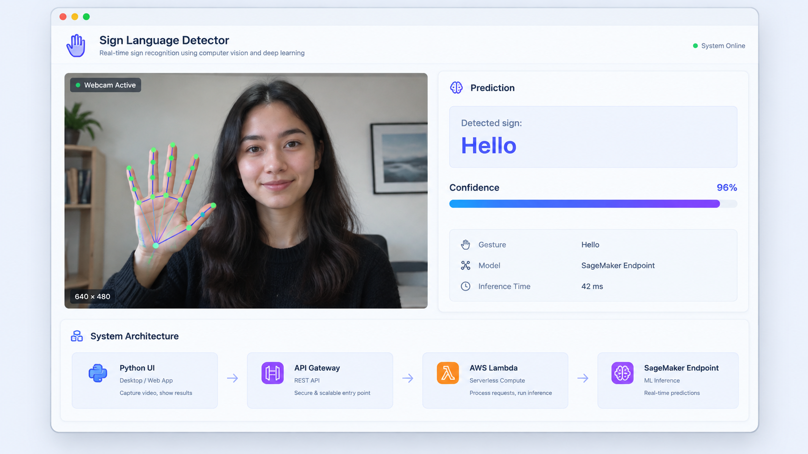
Used TensorFlow to detect rocks and obstacles from an Xbox Kinect feed for the UW Robotics navigation team and its rover-competition work.
Built a Swift iOS application that lets users photograph country flags and predicts the associated country. Trained an image-classification dataset with MobileNets in TensorFlow and converted the model to Core ML.
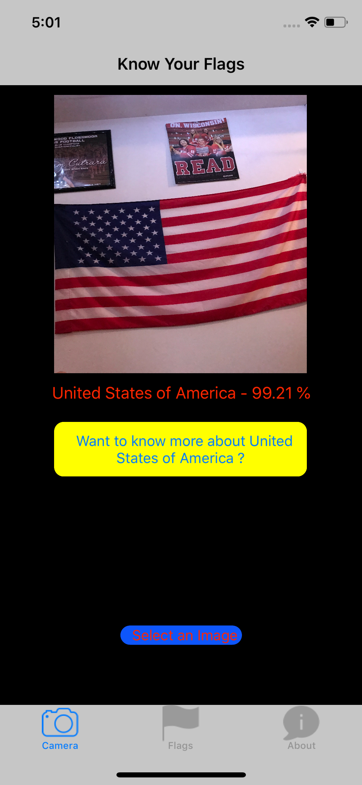
Built a Python application that detects objects while playing video files using TensorFlow, OpenCV, and a model trained on Microsoft's COCO dataset.
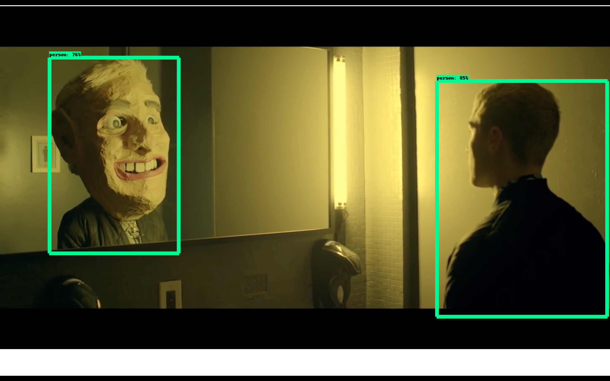
Created a fully functional buffer manager that performs page replacement using the clock algorithm.
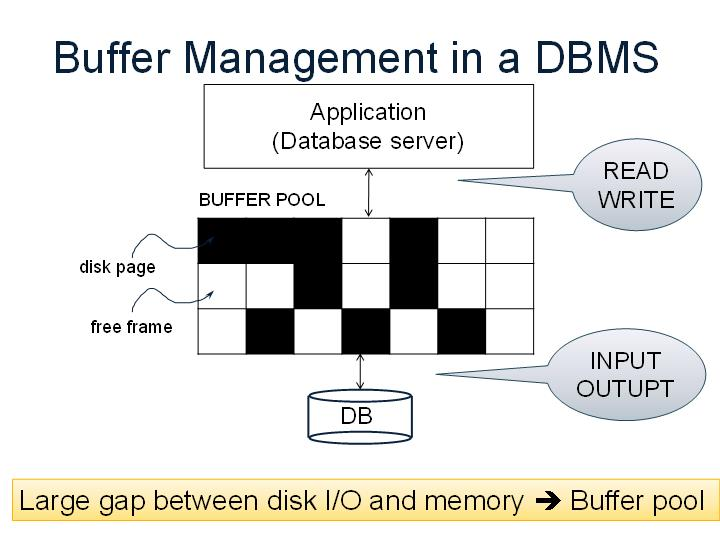
Built an iOS application that lets users select common measurement units and convert between related units.
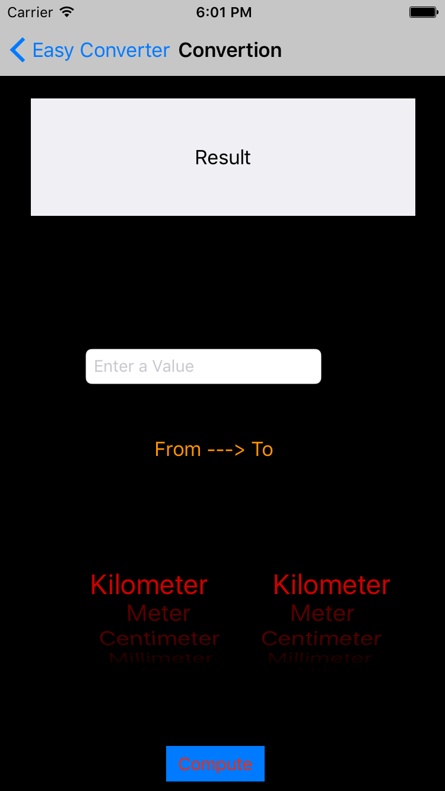
Created a cross-platform application in Microsoft Xamarin for iOS, Android, and Windows that predicts emotions from user-uploaded images through HTTP requests to Microsoft's Cognitive Services API and JSON response processing.
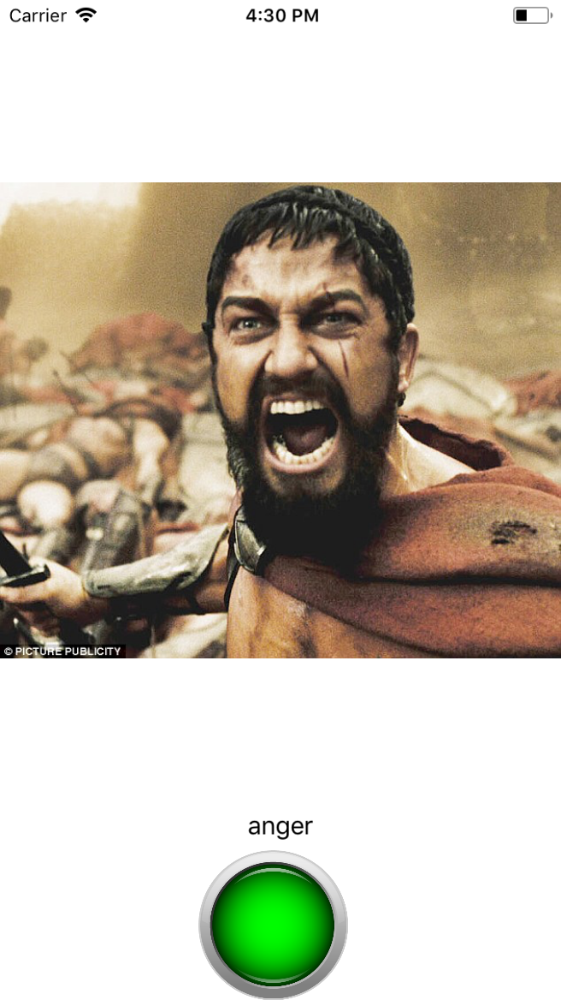
Built an IoT system that controls room lights through POST requests to a Node.js server running on a Raspberry Pi.
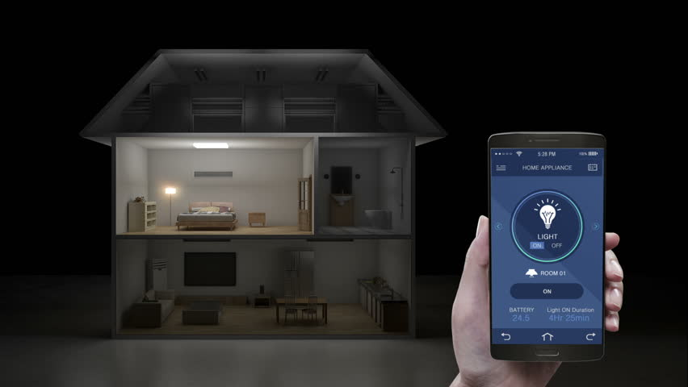
Built a program that determines whether a traveler can reach one airport from another based on available connecting flights.
Built a Chrome extension that loads the Wikipedia page for song composers while a YouTube video is playing by sending HTTP requests to the Wikipedia API.
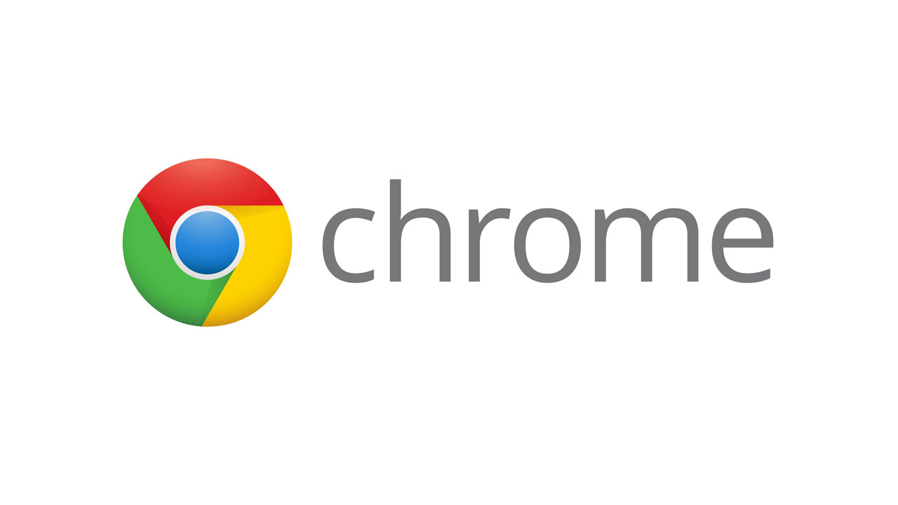
Created a Java game with a graphical interface that displays maze start and end positions and finds a path using depth-first search.
Created a LAMP web server on a Raspberry Pi 3 with a graphical interface for uploading files and listing files stored on the server.
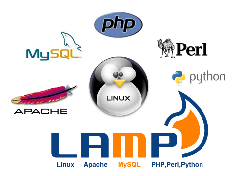
Built a web application that performed CRUD operations on employee records and authorized building access based on employee identification numbers.
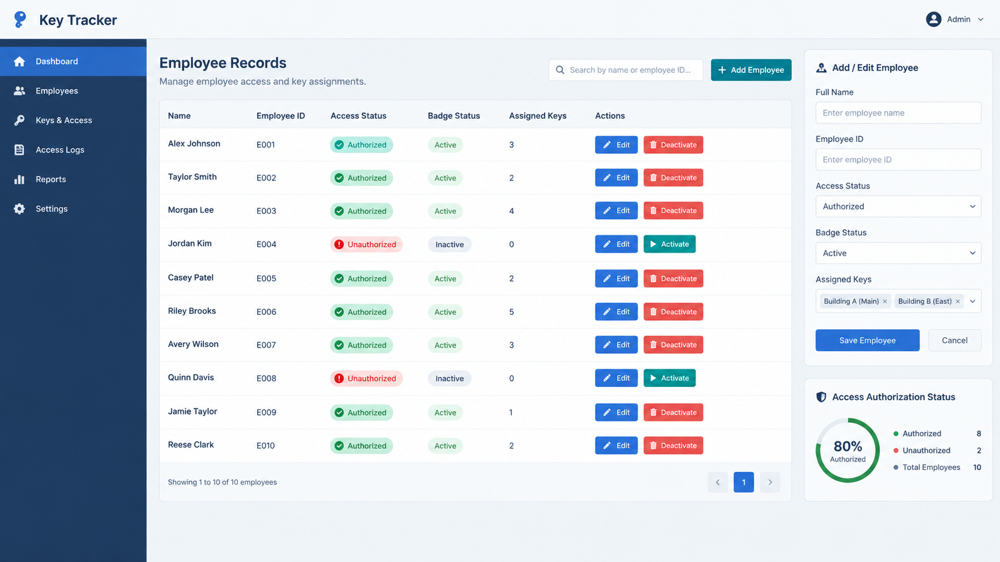
Built an iOS application that tracks users' food intake and recommends exercise routines to help them reach weight goals. Used Apple's Vision framework to extract nutrition information from food labels with OCR.
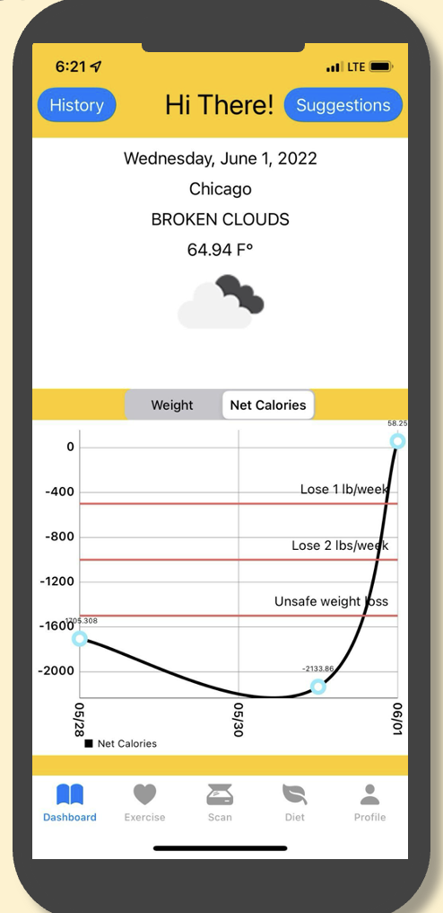